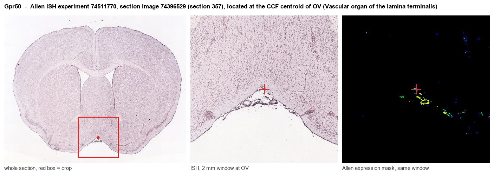
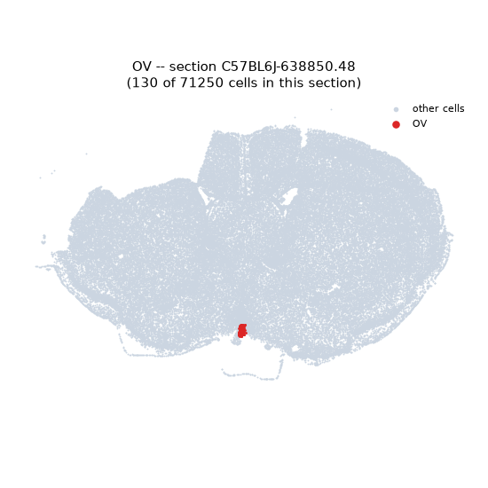
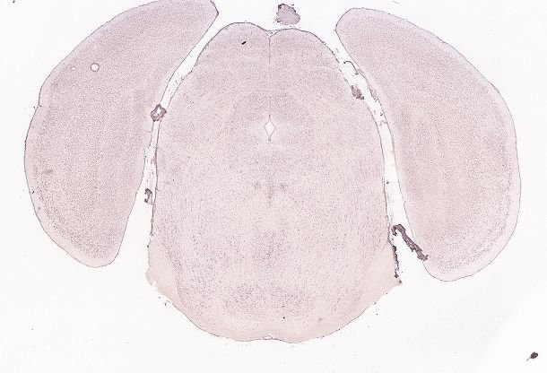
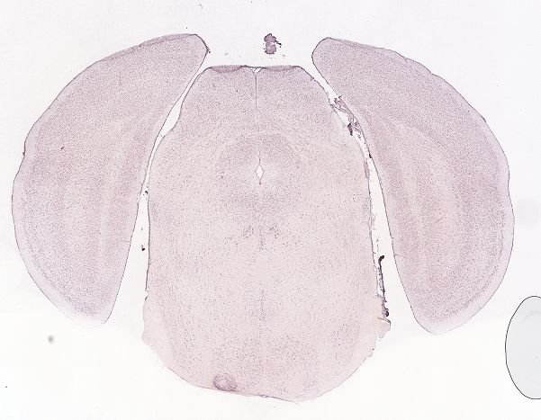
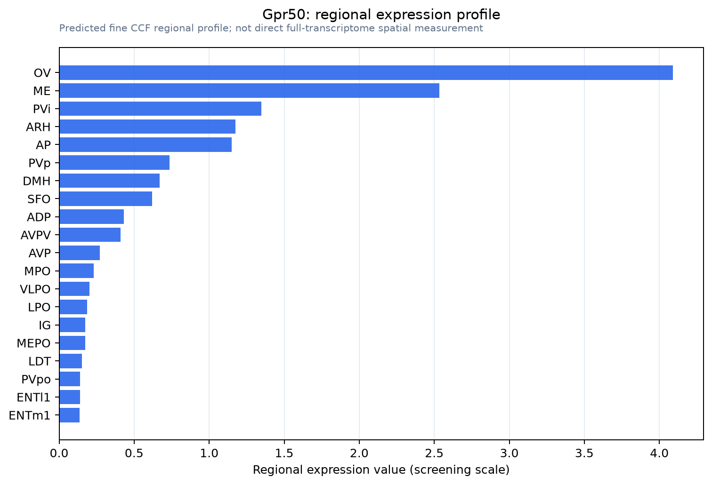

Gpr50
Melatonin-related receptor (G protein-coupled receptor 50) (H9)
Spatial tier: STRICT_EXCLUSIVE · Class: GPCR · Top region: OV (Vascular organ of the lamina terminalis) · Positive regions: 5/554
51.8Discovery Score
47.9Targetability Score
CEvidence grade C
What this means: Gpr50: predicted fine-region profile is strict-exclusive, with 5 positive regions out of 554 (limit 12); direct spatial validation is required.
Function in OV: evidence, prediction, innovation
- Gene function
- GPR50 is an X-linked orphan class A GPCR, ~45% identical to MT1/MT2 but not melatonin-binding. It heterodimerises with MT1 to block MT1 signalling, couples to Galpha12/13-RhoA, and binds TIP60 and the glucocorticoid receptor. In leptin/TRH signalling, Gpr50-null mice are lean, obesity-resistant, hyperactive and fasting-torpor-prone.
- Region function
- The OVLT is a barrier-free circumventricular organ sensing plasma osmolality, sodium, angiotensin II and relaxin, driving thirst, vasopressin release, thermoregulation and fever.
- Published in this region
- expression only Batailler et al. 2012, with a validated anti-GPR50 antibody in sheep, rat and mouse, found GPR50 in the OVLT, medial preoptic area, lateral septum, BNST, lateral hypothalamus and amygdala; Sidibe et al. 2010 found strongest adult signal in third-ventricle tanycytes, median eminence and dorsomedial hypothalamus. Function untested here.
- Predicted function
- Prediction: GPR50 works at the ventricular-vascular interface, where Galpha12/13-RhoA signalling sets barrier permeability and gates blood-borne signals to lamina terminalis neurons. Knockout torpor and thermogenesis phenotypes (Bechtold et al. 2012) suggest it tunes defence thresholds to energy state. Knockdown should shift the osmotic drinking/vasopressin threshold and lower the fasting torpor threshold.
- Innovation
- ★★★★☆ 4/5 GPR50 has a clear metabolic phenotype and OVLT immunoreactivity, yet nobody has manipulated it there.
- Tools
- Gpr50 knockout/lacZ reporter mouse (Ivanova et al. 2008); validated anti-ovine GPR50 antibody (Batailler et al. 2012); no Cre line, agonist or antagonist; tanycyte access via Rax-CreER or third-ventricle AAV.
- References
Direct evidence located at the region

Allen ISH experiment 74511770, section image 74396529 (section 357): the section that contains the CCF centroid of Vascular organ of the lamina terminalis according to the Allen image-to-atlas alignment (reference_to_image), with a 2 mm window around that point. Left: whole section, red box = window. Middle: ISH signal. Right: Allen's expression-mask view of the same window. open this image in the Allen viewer
Look it up yourself: Allen Mouse Brain ISH for Gpr50Allen reference atlas: OV (structure 763)ABC Atlas MERFISH viewer(in the ABC Atlas choose dataset MERFISH-C57BL6J-638850-CCF, colour cells by gene "Gpr50" or by parcellation_substructure "OV")All genes confined to OV + 3-D brain
Direct spatial evidence
MERFISH REGION LOCATOR

DIRECT ALLEN ISH

DIRECT ALLEN ISH

Regional expression figure

Predicted WMB × fine-CCF profile; not direct full-transcriptome spatial measurement.
Spatial profile
Evidence and specificity
- Evidence status
- PREDICTED_FINE
- Direct sources
- None; predicted localization only
- Exclusive threshold
- 12 positive regions out of 554
- Spatial specificity
- 0.457
- Top-region fraction
- 0.216
- Filter status
- PASS
Interpretation limits
- Cell-type-to-region projection is imputed expression, not direct spatial measurement.
- Adult reference atlases do not establish stability across age, sex, strain, state, or disease.
- Transcript abundance does not guarantee protein abundance or genetic-tool performance.